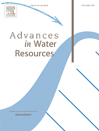
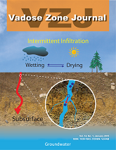
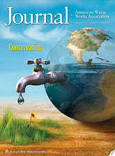
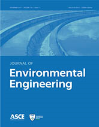

Google Scholar Profile (links to download)

 ORCID
ORCID
Peer-Reviewed Journals (corresponding author&)(undergrad#; grad* student)
- Nowrin, N.S.*, C.-L. Cheng&, J. Ho, J. An, and F.N. Nazari. (2026) “A Machine Learning Approach for Water Quality Assessment in the Lower Rio Grande Valley Watershed”. MDPI-Water: AI Application in Water Quality Monitoring. https://doi.org/10.3390/w18151812.
- Salinas, A.*, C.-L. Cheng, E. Pereira, R. Almeida, and J. Kang (2026), "Greenhouse gas flux response in biochar- and compost-amended lawn soils under simulated water saturation conditions", Journal CLEAN - Soil, Air, Water. https://doi.org/10.1002/clen.70254.
- Stassi, S*, J. Benavides, C.-L. Cheng, M.G. da Silva, N.E. Ray, N. Barros, and R. Almeida. (2026) "Low Methane Emissions from Nutrient-Rich Former River Channels in a Hydrologically Managed Dryland Delta". Limnology and Oceanography Letters. https://doi.org/10.1002/lol2.70131.
- Abdullah, S.M.F.*, C.-L. Cheng&, J. Benavides, J. Ho, and R. Almeida. (2026) "Applications of Machine Learning in Enhancing Evaporation Estimation for Small Reservoirs: A Case Study in Semi-Arid South Texas". Modeling Earth Systems and Environment. 2026(12): 146. https://doi.org/10.1007/s40808-026-02773-0.
- Preota, S.A.*, C.-L. Cheng&, M. Hwangbo, and J. Kim. (2025) “Optimized Filtrations for Stormwater Quality Improvement by Porous Media-Biochar Applications: Column Experiments and Inverse Modeling”. MDPI-Water: Soil-Groundwater Pollution Investigations. 2025.17(9): 1372. https://doi.org/10.3390/w17091372.
- Jaramillo, I.*, C. Cocco, J. Kang, C.-L. Cheng, and E. Pereira (2025), "Turning Waste into Fertilizer: Aloe Vera Leaf Shavings Improve Plant Growth and Support Soil Fertility in Organic Systems", MDPI-Soil Systems: Soil Management, Mitigating GHG Emissions. https://doi.org/10.3390/soilsystems9040113.
- Igberase, V.*, J. Parsons, C.-L. Cheng, J. Kim, and J. Kang (2025), "Aqueous lead removal using biochar-pumice filter derived from avocado seed, aspen bedding and palm tree frond", International Journal of Environmental Science and Technology: Short Communication. https://doi.org/10.1007/s13762-025-06757-y.
- Sierra, K.*, P. Park, C.-L. Cheng, Y.J. Kim, J.-H. Hwang, B. Kim, B.H. Nam, and J. An. (2025) “Experimental investigation on metakaolin/coal fly ash-based porous geopolymer grouting material for geotechnical applications”. Journal Geotechnical and Geological Engineering. 2025. 41(2): 297-306. https://doi.org/10.12989/gae.2025.41.2.297.
- Granados, P.#, S. Mireles*, E. Pereira, C.-L. Cheng, and J. J. Kang. (2022) “Effects of biochar production methods and biomass types on lead removal from aqueous solution”. Communication: Surface Sciences and Technology (Biochar: Preparation and Suface Adsorption Applications). Applied Sciences. 2022; 12(10):5040. https://doi.org/10.3390/app12105040.
- Ahmed, I.S.*, C.-L. Cheng&, J., J.L. Gonzalez, J. Kang, J. Ho, and L. Soto-Sanchez*. (2021) “Groundwater Vulnerability Assessment of Shallow Aquifer in the South Texas Sand Sheet using a GIS-Based DRASTIC Model”. Modeling Earth Systems and Environment. https://doi.org/10.1007/s40808-021-01292-4.
- Navarro, J.#, J. Salazar#, J., J. Kang, J. Parsons, C.-L. Cheng, A. Castillo*, and E. Pereira. (2020) “Compost and biochar to promote soil biological activities under sweet potatoes cultivation in a subtropical semiarid region”. Applied and Environmental Soil Science. https://doi.org/10.1155/2020/7230595.
- Yin, S.*, C.-L. Cheng&, J. Parsons, Y. Mao, J. Kang, and J. Kim (2020), "Evaluation of arsenic sorption performance using dendritic anatase and polycrystalline rutile nano-TiO2 for environmental applications", International Journal of Environmental Science and Technology. https://doi.org/10.1007/s13762-020-02963-y.
- Mireles, S.*, J. Parsons, T.M. Trad, C.-L. Cheng, and J. Kang (2019), "Lead removal from aqueous solutions using biochars derived from corn stover, orange peel and pistachio shell", International Journal of Environmental Science and Technology. https://doi.org/10.1007/s13762-018-02191-5.
- Zhong, J.*, E.T. Yu, C.D. Clark, B.C. English, J.A. Larson, and C.-L. Cheng (2018). "Effect of Land Use Change for Bioenergy Production on Feedstock Cost and Water Quality". Applied Energy: Special Issue on "Energy-Water-Food Nexus". https://doi.org/10.1016/j.apenergy.2017.09.070.
- Cheng, C.-L., E. Perfect, M. Gragg*, and E.T. Yu (2017). Impact of the capillary pressure-saturation pore size distribution parameters on geologic carbon sequestration estimates, Journal of Sustainable Mining, DOI: /10.1016/j.jsm.2017.09.001.
- Cheng, C.-L., C. Cropper, E. Perfect, L.D. McKay, and M. Kang (2017). "Upscaling Capillary Pressure - Saturation Parameters at Different Pressure Reference Elevations", Vadose Zone Journal 16(8). doi:10.2136/vzj2017.03.0054/.
- Miller#, R., J. Ho, and C.-L. Cheng (2016), Sediment Yield Prediction and Watershed Modeling of the Los Olmos Creek Watershed in South Texas. SDRP Journal of Earth Sciences & Environmental Studies. DOI: 10.15436/JESES.1.3.4.
- Cropper, C.*, E. Perfect, C.-L. Cheng, L.D. McKay, and M. Kang (2016). "Evaluation of TrueCell for Estimating Point Capillary Pressure - Saturation Parameters for Flint Sand", GEODERMA: DOI:10.1016/j.geoderma.2016.09.034.
- Mireles, S.*, Y. Ok, C-L. Cheng, and J. Kang (2016), "Adsorptive and kinetic characterization of aqueous zinc removal by biochars", SDRP Journal of Earth Sciences & Environmental Studies. DOI: 10.15436/JESES.1.3.2.
- Donnelly, B.*, E. Perfect, L.D. McKay, P.J. Lemiszki, V.H. DiStefano, L.M. Anovitz, J. McFarlane, R.E. Hale, and C.-L. Cheng (2016). Capillary Pressure - Saturation Relationships for Gas Shales Measured Using A Water Activity Meter. Journal of Natural Gas Science and Engineering, Special Issue: Advanced Theoretical and Numerical Approaches and Applications to Enhanced Gas Recovery. doi: 10.1016/j.jngse.2016.05.014.
- Wei, W., J. Cai, X. Hu, P. Fan, Q. Han, J. Lu, C.-L. Cheng, and F. Zhou (2015). "A numerical study on fractal dimensions of a current streamlines in two-dimensional and three-dimensional pore fractal models of porous media", Fractals. doi: 10.1142/S0218348X15400125.
- Cheng, C.-L., E. Perfect, B. Donnelly, H.Z. Bilheux, A.S. Tremsin, L.D. McKay, V.H. DiStefano, J.C. Cai, and L.J. Santodonato (2015), Rapid Imbibition of Water in Fractures in Unsaturated Sedimentary Rock, Advances in Water Resources. doi: 10.1016/j.advwatres.2015.01.010.
- Cai, J.C., E. Perfect, C.-L.Cheng, and X.Y. Hu (2014), Generalized Modeling of Spontaneous Imbibition Based on Hagen-Poiseuille Flow in Tortuous Capillaries with Variably Shaped Apertures, Langmuir, 30(18): 5142-5151.
- Kang. M., E. Perfect, C.-L. Cheng, H. Z. Bilheux, J. Lee, J. Horita, and J.M. Warren (2014), Multiple Pixel-Scale Water Retention Curves Quantified by Neutron Radiography, Advances in Water Resources. doi: 10.1016/j.advwatres.2013.12.004.
- Perfect, E., C.-L. Cheng, M. Kang, H. Z. Bilheux, , J.M. Lamanna, M. Gragg, and D.M. Wright (2014), Neutron Imaging of Hydrogen-Rich Fluids in Geomaterials and Engineered Porous Media: A review, Earth-Sciences Review. doi:10.1016/j.earscirev.2013.11.012.
- Cheng, C.-L., M.J. Gragg, E. Perfect, M.D. White, P. Lemiszki, and L.D. McKay (2013), Sensitivity of Injection Costs to Input Petrophysical Parameters in Numerical Geologic Carbon Sequestration Models, International Journal of Greenhouse Gas Control. doi: 10.1016/j.ijggc.2013.07.018.
- Cheng, C.-L., E. Perfect, and R.T. Mills (2013), Forward Prediction of Height-Averaged Capillary Pressure-Saturation Parameters using the BC-vG Upscaler, Vadose Zone Journal. doi:10.2136/vzj2012.0174.
- Warren, J.M., H.Z. Bilheux, C.-L. Cheng, and E. Perfect (2013), Reply to: Comment on "Neutron Imaging Reveals Internal Plant Hydraulic Dynamics", Plant and Soil, 371: 15-17.
- Kang, M., E. Perfect, C.-L. Cheng, H. Z. Bilheux, M. Gragg, D.M. Wright, J.M. Lamanna, J. Horita, and J.M. Warren (2013), Diffusivity and Sorptivity of Berea Sandstone Estimated using Neutron Radiography, Vadose Zone Journal. doi:10.2136/vzj2012.0135.
- Warren, J.M., H.Z. Bilheux, M. Kang, S. Voisin, C.-L. Cheng, J. Horita, and E. Perfect (2013), Neutron Imaging Reveals Internal Plant Hydraulic Dynamics, Plant and Soil, doi: 10.1007/s11104-012-1579-7.
- Kang. M., H. Z. Billheux, S. Voisin, C.-L. Cheng, E. Perfect, J. Horita, and J.M. Warren (2013), Water Calibration Measurements using Neutron Imaging for Quantification of Water Contents in Porous Media, Nuclear Instruments and Methods in Physics Research Section A. doi:10.1016/j.nima.2012.12.112.
- Cheng, C.-L., M. Kang, E. Perfect, S. Voisin, J. Horita, H.Z. Bilheux, J.M. Warren, D.L. Jacobson, and D.S. Hussey (2012), Average Soil Water Retention Curves Measured by Neutron Radiography, Soil Science Society of America Journal, 76(4): 1184-1191. doi:10.2136/sssaj2011.0313.
- Cheng, C.-L., J.A. Gaunt, F. Mao, and S.K. Ong (2012), Permeation of Gasoline through Ductile Iron Pipe Gaskets in Water Mains, Journal of American Water Works Association, doi:10.5942/jawwa.2012.104.0052.
- Perfect, E., C.-L. Cheng, and P. Lehmann (2011), Book Review: Neutron Imaging and Applications: A Reference for the Imaging Community, Vadose Zone Journal (10): 1-2. doi:10.2136/vzj2011.0060br.
- Mao, F., J.A. Gaunt, S.K. Ong, and C.-L. Cheng (2011), Permeation of Petroleum-Based Hydrocarbons through PVC Pipes Jointed with Rieber Gasket Systems, ASCE Journal of Environmental Engineering, doi:10.1061/(ASCE)EE.1943-7870.0000431.
- Mao, F., J.A. Gaunt, C.-L. Cheng, and S.K. Ong (2011), Microscopic Visualization Technique to Predict the Permeation of Organic Solvents through PVC Pipes in Water Distribution Systems, ASCE Journal of Environmental Engineering, 137 (2): 137-145. doi: 10.1061/(ASCE)EE.1943-7870.0000306.
Selected Student Theses
- PDF Nowrin, S. (2026 May, CIVE) “Modeling and Experiment Driven Stormwater Quality Improvement: Case Studies in Lower Rio Grande Valley, Texas”.
- PDF Abdullah, F.S. (2025 Aug, CIVE) “Machine Learning Applications for Evaporation Predictions From Small Reservoirs: Potential Water Savings for Lower Rio Grande Valley, Texas”.
- PDF Preota, S.A. (2025 May, OCES) “Mitigation of Droughts and Floods From Conjunctive Water Resource Management Using Managed Aquifer Recharge (MAR): Experiments and Numerical Modeling”.
- PDF Capus, D.Z. (2022 Dec, OCES) “Conjunctive Management for Groundwater-Surface Water Resources: Numerical Modeling and Potential Assessment of Managed Aquifer Recharge (MAR) at Lower Rio Grande Valley in South Texas”.
- PDF Soto-Sanchez, L. (2021 Dec, OCES) “Managing Water Resource and Land Use in Lower Rio Grande Valley of South Texas Using a Groundwater Vulnerability Model”.
- PDF Ahmed, S.I. (2021 Jul, CIVE) “Hydraulic Characterization of Porous Media for Remediation Applications in Geo-Environmental Engineering: Laboratory Experiment and Numerical Modeling”.
- PDF Fatta, A.A. (2020 Dec, CIVE) “Performance and Efficiency Evaluation of Stormwater Management LIDs Using PCSWMM: Numerical Modeling and Sensitivity Analysis”.
- PDF Yin, S. (2019 Jul, AESS) “Engineered Porous Media for Groundwater Contaminant Remediation: Applications of Nano-TiO2”.
Selected Conference/Presentation/Posters
- Cheng, C.-L. (2026) "Flood and Drought Mitigations: Engineered LID Porous Media to Enhance Stormwater Infiltration, Water Supply, and Water Security". 2026 LRGV Annual Stormwater Management Conference, SPI, TX (May 22, 2026)
- Abdullah, S.M.F. & C.-L. Cheng. (2026) "Preliminary Water Quality Proxy for Coastal Wetlands: Hydrodynamic Modeling for Water-Nutrient Transport and Mixing". 2026 LRGV Annual Stormwater Management Conference, SPI, TX (May 22, 2026)
- Abdullah, S.M.F. & C.-L. Cheng. (2026) "Hydrodynamic Modeling of Water-Nutrient Transport and Mixing as a Preliminary Water Quality Proxy for Shallow Coastal Lagoons in South Bay". UTRGV College of Science and College of Engineering, Annual STEM Research Conference, Edinburg, TX (April 24, 2026)
- Abdullah, S.M.F., C.-L. Cheng, J. Benavides, J. Ho, and R. Almeida. (2025) "Applications of Machine Learning in Enhancing Evaporation Estimation for Small Reservoirs: A Case Study in Semi-Arid South Texas". NASA Earth Observations Enabling Advances in Water Management. 2025 AGU Annual Meeting, New Orleans, LA. (Dec. 15-19. 2025)
- Bhattarai, S., A. Del Claro1, S.M.F. Abdullah, C.-L. Cheng, J. Benavides, and R. Almeida. (2025) "Technical Potential and Suitability for Floating Photovoltaic Deployment on Reservoirs in the Water-Stressed Rio Grande Valley of Texas". 2025 AGU Annual Meeting, New Orleans, LA. (Dec. 15-19. 2025)
- Mendez, E., T.Y. Dong, C.-L. Cheng, and E. Pereira. (2025) "Enhancing Research Capacity and Career Readiness in Earth and Environmental Sciences Using Data Analytics and Remote Sensing Data at an MSI". 2025 AGU Annual Meeting, New Orleans, LA. (Dec. 15-19. 2025)
- Preota, S.A., C.-L. Cheng, J. Kim and M. Hwangbo. (2025) "Modified infiltration basins to enhance water quantity and quality: Potential managed aquifer recharge (MAR) in Lower Rio Grande Valley, Texas". 2025 GSA Annual Meeting, San Antonio, TX. (Oct. 19-22. 2025)
- Nowrin, S., Cheng, C. L., and J. Ho (2025) "Preliminary Investigation of Storm Water Treatment Incorporating 3D Printed Porous Media". 2025 GSA Annual Meeting, San Antonio, TX. (Oct. 19-22. 2025)
- Naqvi, S.M.Z. and Cheng, C. L. (2025) "Numerical Modeling of Short-Chain PFAS Sorption and Transport through Soil Vadose Zone". 2025 GSA Annual Meeting, San Antonio, TX. (Oct. 19-22. 2025)
- Preota, S.A., C.-L. Cheng, J. Kim and M. Hwangbo. (2025) "Drought and Flood Mitigations from Conjunctive Water Resource Management using Managed Aquifer Recharge (MAR): Experiment and Modeling" UTRGV College of Science and College of Engineering, Annual STEM Research Conference, Edinburg, TX (May 2, 2025)
- Obregon, A., C.-L. Cheng, J. Kang, and E. Pereira. (2025) "Numerical Modeling on Greenhouse Gas Emissions (CO2) From Simulated Urban Soils Under Different Water Saturation Conditions". UTRGV College of Science and College of Engineering, Annual STEM Research Conference, Edinburg, TX (May 2, 2025)
- Nowrin, S.N., C.-L. Cheng, and J. Ho. (2025) "Experimental and Numerical Evaluations of Performance and Efficiency of Natural Porous Media in Stormwater Management Infrastructures". UTRGV College of Science and College of Engineering, Annual STEM Research Conference, Edinburg, TX (May 2, 2025)
- Naqvi, S.M.Z. and C.-L. Cheng. (2025) "Investigation of Sorption Effects on PFBS Leaching Behavior in Vadose Zone Soils: A Case Study with Numerical Modeling". UTRGV College of Science and College of Engineering, Annual STEM Research Conference, Edinburg, TX (May 2, 2025)
- Abdullah, S.M.F., C.-L. Cheng, R. Almeida, J. Benavides, and J. Ho. (2025) "Harnessing Machine Learning To Improve Evaporation Estimation For Small and Data-Scarce Reservoirs In Semi-Arid Regions". UTRGV College of Science and College of Engineering, Annual STEM Research Conference, Edinburg, TX (May 2, 2025)
- Acevedo, J.A., P. Park, and C.-L. Cheng (2025) "A Thermal-Mechanical Analysis of the Well-Structure Integrity in Enhanced Geothermal Systems Using Numerical Modeling". UTRGV College of Science and College of Engineering, Annual STEM Research Conference, Edinburg, TX (May 2, 2025)
- Mendez, E., T.Y. Dong, C.-L. Cheng, and E. Pereira. (2025) "Enhancing Interests and Research Capacity in Earth and Environment Sciences Using Data Analytics and Remote Sensing Data at a Hispanic-Serving Institution". UTRGV College of Science and College of Engineering, Annual STEM Research Conference, Edinburg, TX (May 2, 2025)
- Preota, S.A., and C.-L. Cheng. (2024) "Co-Benefit Potentials of Flood Mitigations and Increasing Water Supply via Groundwater Recharge in Arroyo Colorado Watershed in South Texas" UTRGV College of Science, Annual Research Conference, Edinburg, TX (April 26, 2024)
- Abdullah, S.M.F., C.-L. Cheng, R. Almeida, and J. Benavides. (2024) "Modeling Selected Water Quality Parameters In Arroyo Colorado Basin Under Climate Extreme for Possible Managed Aquifer Recharge (MAR)using HEC-RAS" UTRGV College of Science, Annual Research Conference, Edinburg, TX (April 26, 2024)
- Mocarrami, Z.,H. Deyoe, W. Pulich, and C.-L. Cheng. (2024) "Temporal Dynamics of Seagrass Bare Patches in the Lower Laguna Madre: A Remote Sensing Analysis" UTRGV College of Science, Annual Research Conference, Edinburg, TX (April 26, 2024)
- Acevedo, J.A., P. Park, and C.-L. Cheng. (2023) "Materials and Structural Design Parameters for Modeling of Enhanced Geothermal Energy System" DOE MSIIP CA2REER 2nd Annual Symposium. Edinburg, TX. (September 22, 2023)
- Salinas, A. M. Bettini, A. C. Rodriguez, E. Garcia, J.J. Kang, C.-L. Cheng, E. Pereira, and R. Almeida. (2023) "Greenhouse Gas Emission and Redox Potential in Biochar- and Compost-Amended Urban Soil Under Contrasting Water Saturation Conditions" US DOE Environmental System Science Principal Investigator Meeting, Bethesda, MD (May, 2023)
- Rivera, Z., C.-L. Cheng, A. Salinas, J.J. Kang, E. Pereira, R. Almeida. (2023) "Investigation of Hydraulic Parameters and Their Roles in Soil Greenhouse Gas and Water Exchange Under Climate Extremes" UTRGV College of Science, Annual Research Conference, Brownsville, TX (April 28, 2023)
- Salinas, A. M. Bettini, E. Garcia, A. C. Rodriguez, R. Almeida, C.-L. Cheng, E. Pereira, and J.J. Kang. (2023) "Greenhouse gas emission and redox potential dynamics affected by water saturation conditions in biochar/compost amended soil" UTRGV College of Science, Annual Research Conference, Brownsville, TX (April 28, 2023)
- Salinas, A. M. Bettini, E. Garcia, A. C. Rodriguez, E. Garcia, C.-L. Cheng, E. Pereira, R. Almeida, and J.J. Kang. (2023) "Greenhouse gas emission and redox potential in biochar- and compost amended urban soil under contrasting water saturation conditions" DOE RDPP PI meeting (January 17th, 2023)
- Salinas, A., A. C. Rodriguez, E. Pereira, C.-L. Cheng, and J.J. Kang. (2022) "Greenhouse gas flux response under simulated soil hydrologic dynamics" Soil Science Society of America (SSSA) International Annual Meeting,Baltimore, MD(Nov 6-9, 2022)
- Pereira, E., C.-L. Cheng, and J.J. Kang. (2022) "Progress on Increasing Hispanic Workforce in Soil Science through Training, Research, and Education at the University of Texas Rio Grande Valley" Soil Science Society of America (SSSA) International Annual Meeting,Baltimore, MD(Nov 6-9, 2022)
- De La Rosa*, G., C.-L. Cheng, E. Pereira, and J.J. Kang. (2022) "Measuring Nitrate Loss in the Form of Leaching in Different Soil Types and Nitrogen Fertilizers" Soil Science Society of America (SSSA) International Annual Meeting,Baltimore, MD(Nov 6-9, 2022)
- Capus, D. Z.* and C.-L. Cheng. (2022) "Aquifer Storage and Recovery Potentials at Lower Rio Grande Valley: Subsurface 3D Visualization and Data Analysis of Southern Gulf Coast Aquifer"" The Geological Society of America (GSA), South-Central Section Annual Meeting, McAllen, TX (March 11-15, 2022)
- Herebia, E. J.*, J. L. Gonzalez, C.-L. Cheng, S. Hardage, and P. Soti. (2022) "Anthropogenically induced sinuosity changes on the channel of the lower Rio Grande" The Geological Society of America (GSA), South-Central Section Annual Meeting, McAllen, TX (March 11-15, 2022)
- De La Rosa*, G., C.-L. Cheng, E. Pereira, and J.J. Kang. (2021) "Measuring Nitrate Loss in the Form of Leaching in Different Soil Types and Nitrogen Fertilizers" UTRGV College of Science, Annual Research Conference, Edinburg, TX (Nov 19, 2021)
- Pereira, E., L. Elliott*, and C.-L. Cheng. (2020) "Soil aggregation and nutrient distribution across a clay gradient" Soil Science Society of America (SSSA) International Annual Meeting, Phoenix, AZ (Nov 8-11, 2020)
- Soto-Sanchez, L.* and C.-L. Cheng. (2020) "Quantification of groundwater-surface water interactions through hyporheic flow: A Pilot Study of Resacas in Lower Rio Grande, TX" Geological Society of America, South-Central Section Annual Meeting, Geological Society of America (GSA) South-Central Section, (March 8-10, 2020)
- Pereira, E., J. Kang, and C.-L. Cheng. (2019) "Progress on Increasing Hispanic Workforce in Soil Science through Training, Research, and Education: A New Integrated Program at South Texas/Rio Grande Valley," ASA, CSSA and SSSA International Annual Meetings , ASA, CSSA and SSSA, San Antonio (2019)
- Gonzalez, E.*, L. Soto-Sanchez*, and C.-L. Cheng. (2019) "Building Community-Based Water Resource Sustainability and Resilience: A Case Study of Shallow Groundwater Availability and Vulnerability in South Texas," The Geological Society of America Annual Meeting, Geological Society of America (GSA), Phoenix, Arizona (September 2019)
- Cheng, C.-L. (2019) "Building community-based sustainability and resilience for water resource management and education: Case studies in Lower Rio Grande Valley," Texas Water Research Network Meeting, University of Texas at Austin, Austin, TX (May 2019)
- Fatta, A.A.*, C.-L. Cheng, and J. Ho. (2019) "Comparison of the effectiveness of conventional and Low Impact Development (LID) stormwater management practices on watershed flood control using SWMM modeling," 21th Annual Water Quality Management and Planning Conference, SPI, TX (May 2019)
- Harding, J.*, A.G. Nadeau*, L. Soto-Sanchez*, and C.-L. Cheng. (2019) "Conjunctive water resource management and contaminant transport simulations: A case study in Donna reservoir," 21th Annual Water Quality Management and Planning Conference, SPI, TX (May 2019)
- Nadeau*, A.G., J. Harding, and C.-L. Cheng. (2019) "Preliminary Predicitive Constaminant Transport Model for Donna Reservoir Remediation Planning, "2019 UTRGV Engaged Scholar Research Conference, Edinburg, TX (April 2019)



